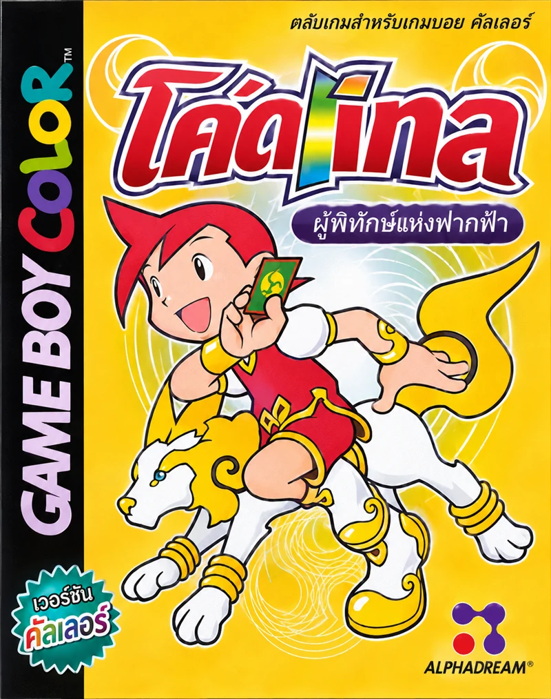

โคโตะแบทเทิล ผู้พิทักษ์แห่งฟากฟ้า
Koto Battle: Tengai no Moribito · Game Boy Color · ภาษาไทย Build068 รุ่นทดสอบ

เรื่องย่อ
เมื่อพลังของถ้อยคำเรียกมอนสเตอร์ออกมาต่อสู้ได้ เด็กหนุ่มผู้ฝึกใช้โคโตดามะจึงต้องหัดจัดชุดคำและอ่านจังหวะศัตรู จากบทเรียนของทาจิบานะสู่การประลองจริง ทุกคำที่เลือกอาจเปลี่ยนผลการต่อสู้ได้ ทั้งเรียกมอนสเตอร์ ใช้เวท และผสมคำให้เกิดคอมโบใหม่
เกมใหม่ ·
Build068 แสดงชื่อและคำอธิบายภาษาไทยในหน้าการ์ดเต็ม ใช้ข้อมูลการ์ด 299 ใบ พร้อม HUD ต่อสู้ที่ใช้ HP และอักษรธาตุญี่ปุ่น
ทดสอบการแสดงผลการ์ดตัวอย่าง 12 ใบบน PyBoy และตรวจการกลับเข้าสนามในบทฝึกแล้ว ยังไม่ได้ยืนยันการเล่นจนจบ
ปัญหาที่ทราบ
เมื่อตั้งชื่อตัวละครเป็นภาษาไทย ชื่ออาจแสดงเพี้ยนเป็นอักษรญี่ปุ่นในบางช่วงของเกม
แพตช์บนเว็บ
ใช้ ROM ต้นฉบับ Koto Battle - Tengai no Moribito (Japan) รหัส BAJJ รุ่น 0 ขนาด 2,097,152 ไบต์
เลือกไฟล์ .gbc จากเครื่อง เบราว์เซอร์จะตรวจไฟล์และสร้าง ROM ภาษาไทยในเครื่องของคุณ หน้าเว็บแจกเฉพาะผลลัพธ์จากไฟล์ที่คุณเลือก และไม่มีลิงก์แจก IPS หรือ xdelta
เลือก ROM ต้นฉบับเพื่อเริ่ม
แปลโดยเพจแปลเกมเก่า